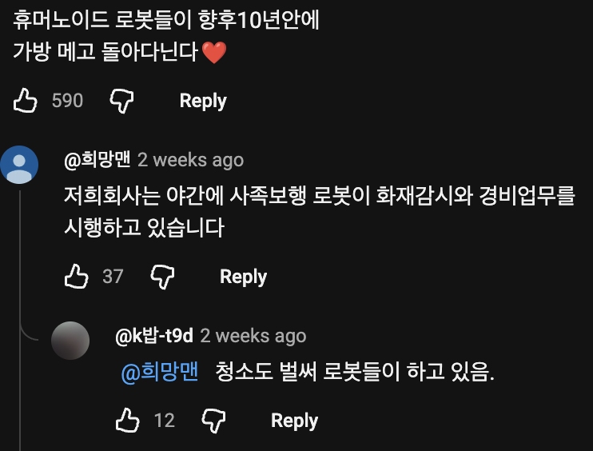

배달 시킬 때 걸어 다녀오긴 멀고, 배달시키기엔 너무 가까워서 배달비 아까운 배달들이 있음.
저런 로봇이 그 부분을 해소할 수 있으면 서로 윈윈 같음.
현대보다 자율주행이 좋네 시발 ㅋㅋㅋㅋㅋ
ㅋㅋㅋㅋㄹㅇ
뭐든 초기에는 수월해보임 보급시 개판되는거지
웬지 불만 임계치차면 저게 게임처럼 하나의 몹으로 인식되지 않을까? 오 ㅋㅋ 배달로봇이다.
개꿀~ 전기충격과 더불어 원격해킹 이루 배달음식 빼먹고 부품 팔아 용돈 버는..
저게 불만 폭주하면 지나가는 루팅몹 될것 같은데 zz
왜케 귀엽냐 ㅋㅋㅋ
저거 전에 자동차랑 사고나서 보험처리 안되고
아직 규정이없어서 사고났을때 처리안되는걸로
기사본듯 저게 자전거로 분류된다그랬나
차다니는데 까지만가나
뭐야 저거 사람이 원격 조종하는거?
배달 내일받고 싶은겨?
오토바이로 횡단보도를 건너고ㅋㅋ그 오토바이는 또 번호판이 없고ㅋㅋ
전기 자전거인가?
하루에 신호위반 100번하고 빨리가라고 똥꼬따는 딸배 100번보기 VS 존나 느린 길막 로봇배달차보기